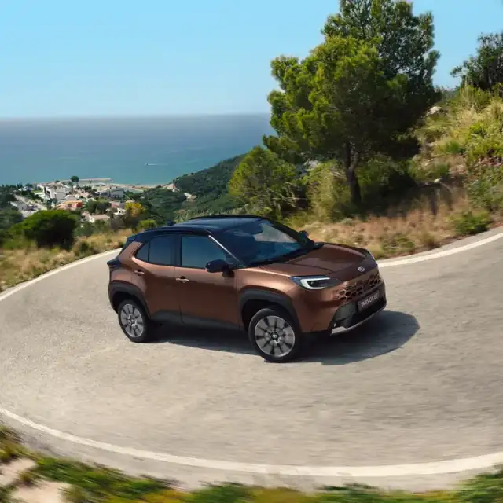

Eerst de klik met de wagen.
Begin bij de wagen en vraag daarna naar een toepasselijke aanbieding. Een proefrit helpt je de keuze te beoordelen.
Ontdek de modellenKijk naar de Toyota, de volledige prijs en de voorwaarden. Pas samen vertellen ze wat het voordeel voor jou is.

Daarom tonen we geen korting, vanafprijs of einddatum. Dit zegt niets over het huidige aanbod bij De Bruyn.
Begin bij de wagen en vraag daarna naar een toepasselijke aanbieding. Een proefrit helpt je de keuze te beoordelen.
Ontdek de modellenLeg de totale kosten naast je gebruik en planning. Een losse korting vertelt niet alles over een zakelijke keuze.
Bespreek je zakelijke wagensLaat de toepasselijkheid, looptijd en uitvoering voor jouw aanvraag bevestigen. Een algemene campagne is niet automatisch een concreet dealervoorstel.
Geef je interesse in inruil mee. De Bruyn beoordeelt de wagen en bespreekt een afzonderlijk voorstel.
Nee. Je vraagt informatie. In deze demo wordt niets verstuurd; er wordt geen prijs vastgelegd of wagen gereserveerd.